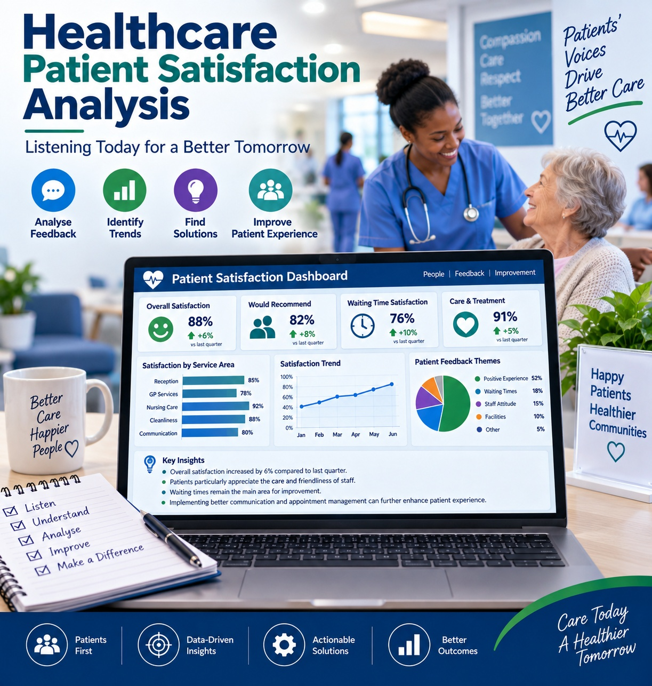
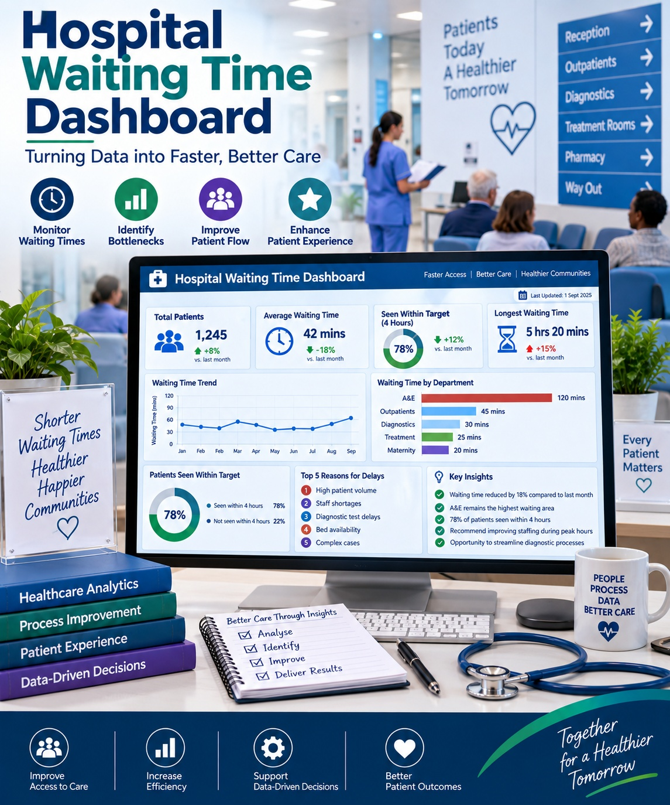
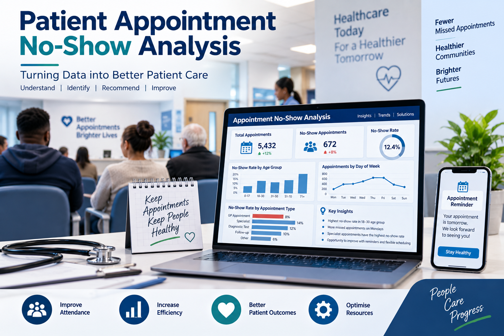
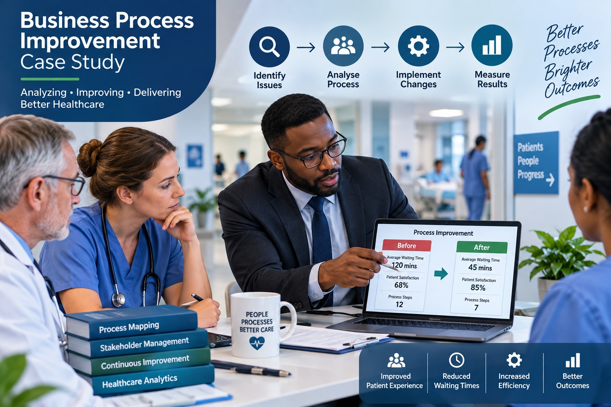
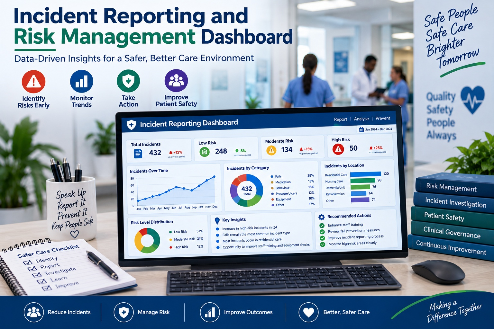

Key Skills Demonstrated
- Customer Journey Analysis
- Survey Analysis
- Stakeholder Analysis
- Data Visualization
- Performance Measurement

Objective:
Develop a dashboard to monitor patient waiting times and support decision-making.
What I Did:
Collected and organized waiting time data.
Built interactive Power BI visualizations.
Created KPIs for average wait times and department performance.
Tools Used:
Power BI
Microsoft Exel
Outcome:
Produced a dashboard that enables quick identification of delays and performance trends.

Objective:
Examine an existing healthcare process and identify improvement opportunities.
What I Did:
Mapped the current process.
Conducted stakeholder analysis.
Identified bottlenecks and inefficiencies.
Proposed process improvements.
Tools Used:
Jira
Microsoft Visio
Process Mapping Techniques
Outcome:
Recommended changes to reduce delays and improve workflow efficiency.
Patient Appointment
No-Show Analysis

Objective:
Analyze patient appointment data to understand why patients miss appointments and identify ways to reduce no-show rates.
What I Did:
Examined appointment records and attendance data.
Identified trends by age group, location, appointment type, and day of the week.
Analyzed reasons for missed appointments.
Recommended interventions to improve attendance.
Tools Used:
SQL
Microsoft Excel
Power BI
Outcome:
Recommended changes to reduce delays and improve workflow efficiency.

Objective:
Evaluate staffing levels and shift patterns to improve workforce efficiency while maintaining quality care.
What I Did:
Reviewed staff rota and attendance data.
Analyzed staffing requirements across different shifts.
Identified periods of overstaffing and understaffing.
Recommended improved scheduling practices.
Tools Used:
Microsoft Excel
Power BI
Process Mapping
Outcome:
Improved visibility of staffing demands.
Recommended optimized shift allocation.
Demonstrated potential cost savings and improved resident care coverage.

<Objective:
Create a dashboard to monitor incidents and support proactive risk management in a healthcare setting.
What I Did:
Collected incident and risk data.
Categorized incidents by severity and type.
Designed dashboards to track trends and patterns.
Produced recommendations for reducing recurring incidents.
Tools Used:
Microsoft Excel
Power BI
SQL
Outcome:
Improved reporting visibility.
Enabled quicker identification of high-risk areas.
Supported data-driven decision-making for patient safety.